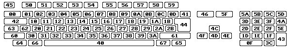
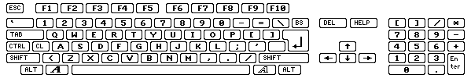
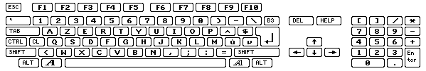
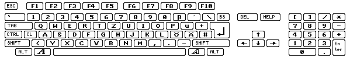

Codis de tecles RAWKEY
Totes les tecles que s'utilitzen a WHDLoad han d'ésser especificades com a codis de teclat.
Per a això, aquí hi ha una taula que mostra tots els codis de teclat en notació hexadecimal:

Amb ànim comparatiu, aquest és el mapa de teclat US:

El teclat francès:

i l'alemany:

i l'italiano:
Els codis de botó
Des de la versió 16.8 d'WHDLoad és possible sortir de WHDLoad emprant un botó del ratolí,
joystick o joypad. Per a això hi ha definicions specials de codis de teclat
rawkey que apareixen llistats a la taula següent. Aquests codis només funcionen per a
l'opció href="opt.html#QuitKey">QuitKey i no per a les altres opcions de teclat.
Per a fer que WHDLoad sigui capaç de detectar que s'ha polsat un botó, no s'ha d'emprar
l'opció href="opt.html#NoVBRMove">NoVBRMove, la CPU ha d'ésser com a mínim un 68010 i
el programa instal.lat ha de tenir habilitada la interrupció en blanc vertical.
Es llisten els codis rawkey en notació decimal i hexadecimal.
Si s'utilitzen els botons d'un joypad ($103..$109/$113..$119) com a tecla
de sortida QuitKey serà impossible que el programa instal.lat
pugui detectar que s'està emprant un joypad. El programa instal.lat creurà que s'ha connectat
un joystick. Això és degut a algunes limitacions de maquinari que fan que un joypad només pugui
ésser detectat una vegada cada 1/50 part de segon, així que no s'ha de configurar la QuitKey d'aquesta
manera per a jocs que requereixen un joypad.
port rawkey 0
generalment mouse |
port rawkey 1
generalment stick/pad |
Ratolí |
Joystick |
Joypad |
Megadrive |
Master System
TecnoPlus |
| $100/256 |
$110/272 |
botó esquerre |
foc |
Vermell/Seleccionar |
B |
A |
| $101/257 |
$111/273 |
botó dret |
segon botó de foc |
Blau/Parar |
C |
B |
| $102/258 |
$112/274 |
Botó central |
| $103/259 |
$113/275 |
|
|
Botó de Play |
| $104/260 |
$114/276 |
|
|
Botó Revers/Oïda esquerra |
| $105/261 |
$115/277 |
|
|
Botó Endavant/Oïda dreta |
| $106/262 |
$116/278 |
|
|
Botó Verd/Reproducció "Shuffle" |
| $107/263 |
$117/279 |
|
|
Botó Groc/Botó bucle |
| $108/264 |
$118/280 |
|
|
Botó Vermell/Seleccionar |
| $109/265 |
$119/281 |
|
|
Botó Blau/Parar |
A les versions de WHDLoad compreses entre 16.4 i 16.7 era possible emprar una QuitKey de $73
per a sortir mitjançant el botó esquerre del ratolí. Això ja no funciona a la versió
16.8 de WHDLoad i posteriors. Al seu lloc s'ha d'emprar el nou codi de tecla rawkey $100.